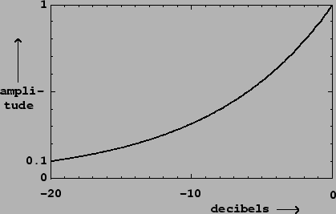
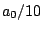
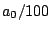

Two amplitudes are often better compared using their ratio than their
difference. Saying that one signal's amplitude is greater than
another's by a factor of two might be more informative than saying it is greater by
30 millivolts. This is true for any measure of amplitude (RMS or peak, for
instance). To facilitate comparisons, we often express amplitudes in
logarithmic units called
decibels. If  is the amplitude of a signal (either peak or RMS),
then we can define the decibel (dB) level
is the amplitude of a signal (either peak or RMS),
then we can define the decibel (dB) level  as:
as:
|  |
Still using to denote the reference amplitude, a signal with linear
amplitude smaller than will have a negative amplitude in decibels:
 gives -20 dB,  gives -40, and so on. A linear amplitude
of zero is smaller than that of any value in dB, so we give it a dB level of
 .
.
In digital audio a convenient choice of reference, assuming the hardware
has a maximum amplitude of one, is
Amplitude is related in an inexact way to the perceived loudness of a sound. In general, two signals with the same peak or RMS amplitude won't necessarily have the same loudness at all. But amplifying a signal by 3 dB, say, will fairly reliably make it sound about one ``step" louder. Much has been made of the supposedly logarithmic nature of human hearing (and other senses), which may partially explain why decibels are such a useful scale of amplitude [RMW02, p. 99].
Amplitude is also related in an inexact way to musical dynamic. Dynamic is better thought of as a measure of effort than of loudness or power. It ranges over nine values: rest, ppp, pp, p, mp, mf, f, ff, fff. These correlate in an even looser way with the amplitude of a signal than does loudness [RMW02, pp. 110-111].